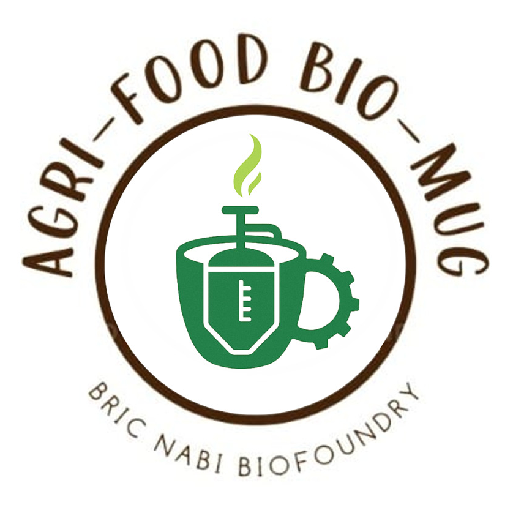

Transforming agricultural residues into sustainable and high-value bio-based materials
Rice straw and agricultural biomass collected from farms.
Mechanical, chemical, and biological processes to break down biomass.
Biomass separated into: